디시콘 제작 작업공간 안내서
PMTCONCON Studio 사용 설명서
이 문서는 디시콘 모음 3을 기준으로 캡처한 화면을 따라가며, 가져오기, 선택, alt 정리, 빈 디시콘 추가, crop 편집, 가로 2칸 적용, 사용 미리보기, 내보내기 검증까지 실제 작업 흐름을 설명합니다.
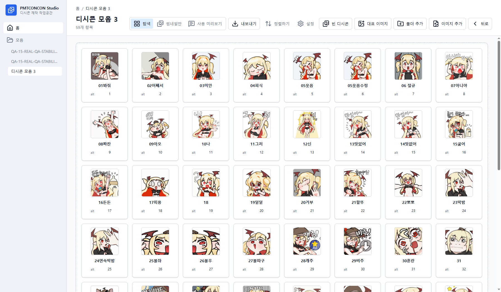
빠른 작업 순서
처음 사용하는 경우 아래 순서대로 따라가면 한 모음을 가져와 정리하고, crop을 조정한 뒤,
DCInside 업로드용 파일과 alts.txt를 확인할 수 있습니다.
- 홈에서 모음을 만들거나 기존 모음인 디시콘 모음 3을 엽니다.
- 이미지 추가 또는 폴더 추가로 파일을 가져옵니다.
- 아이콘을 Ctrl 또는 Shift로 선택하고, 우클릭 메뉴나 alt 일괄 변경으로 이름과 alt를 정리합니다.
- 필요하면 빈 디시콘을 추가해 아직 준비되지 않은 칸을 작업중 상태로 표시합니다.
- 아이콘 편집 패널에서 단일, 가로 2칸, 세로 2칸 모양과 crop 박스를 조정합니다.
- 사용 미리보기에서 댓글 화면에 실제 호출 형태로 삽입해 봅니다.
- 내보내기에서 DCInside 규칙, 파일명, alt, 용량, 경고를 확인한 뒤 내보냅니다.
목차
스크린샷 기준
특히 단일콘 crop 예시는 crop 박스가 이미지 전체를 차지하지 않도록 셀 크기를 120×120으로 낮춘 상태에서 촬영했습니다. 따라서 crop 박스 크기 조절이 가능하다는 점을 화면에서 바로 확인할 수 있습니다.
1. 화면 구성과 탐색
PMTCONCON Studio는 파일 탐색기처럼 모음을 열고, 아이콘을 격자로 보고, 선택한 항목을 편집하는 구조입니다. 상단에는 탐색, 썸네일만, 사용 미리보기, 내보내기, 정렬, 설정, 빈 디시콘, 대표 이미지, 폴더 추가, 이미지 추가가 배치됩니다.
가져오기, 빈 디시콘 추가, 대표 이미지 설정, 내보내기, 사용 미리보기로 바로 이동합니다.
각 카드는 썸네일, 표시 이름, alt 값을 보여주며 더블클릭하면 편집 패널이 열립니다.
홈과 모음 목록을 전환합니다. 현재 문서의 설명 화면은 모두 `디시콘 모음 3`에서 촬영했습니다.
2. 선택, 메뉴, alt 정리
Ctrl 클릭으로 여러 아이콘을 하나씩 추가 선택하고, Shift 클릭으로 범위를 선택합니다. 선택 후 우클릭하면 선택 개수에 맞는 메뉴가 열리며, 여러 alt 값을 한 번에 넣을 수 있습니다.
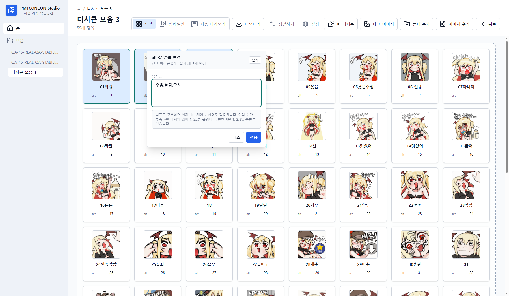
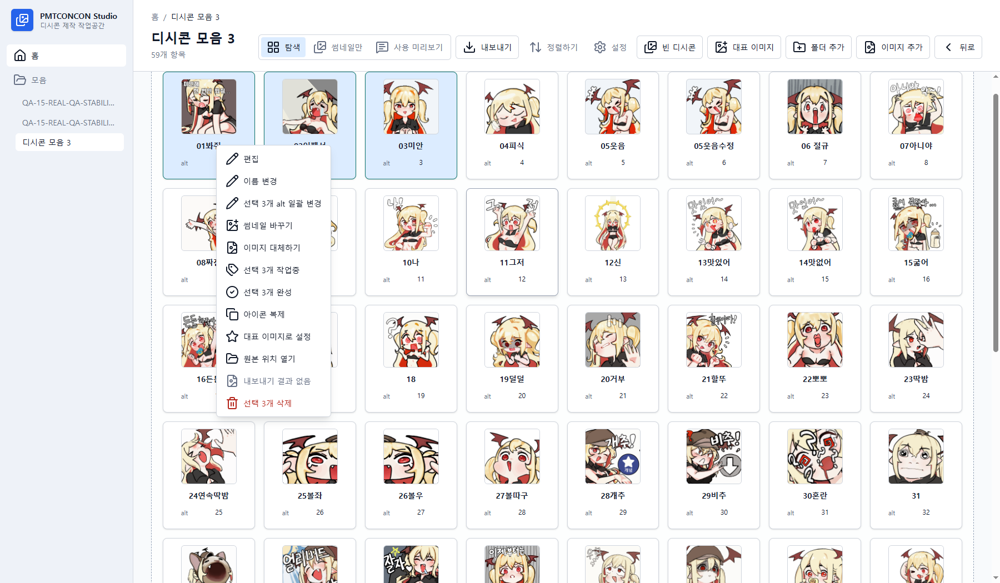
| 메뉴 | 용도 | 확인할 점 |
|---|---|---|
| 편집 | 오른쪽 편집 패널을 열어 crop, 모양, 셀 크기, GIF 반복을 조정합니다. | 적용 전까지 원본 파일은 보존됩니다. |
| alt 일괄 변경 | 여러 아이콘의 alt를 순서대로 입력합니다. | DCInside 기준에서는 1~3글자, 중복 없음, 허용 특수문자만 사용해야 합니다. |
| 작업중 / 완료 | 아직 대체 이미지나 alt가 준비되지 않은 아이콘을 표시합니다. | 내보내기 전에는 작업중 항목을 다시 확인하는 것이 좋습니다. |
| 대표 이미지로 설정 | 모음 카드의 표지 이미지를 바꿉니다. | 첫 imported 아이콘이 기본 표지이며, 나중에 원하는 아이콘으로 바꿀 수 있습니다. |
3. 빈 디시콘과 작업중 디시콘
빈 디시콘은 아직 이미지가 없지만 순서와 alt 자리를 먼저 잡아야 할 때 사용합니다. 추가한 빈 디시콘은 `작업중` 배지를 달고 격자에 들어가며, alt가 비어 있거나 규칙에 맞지 않으면 카드 아래에 오류가 표시됩니다.
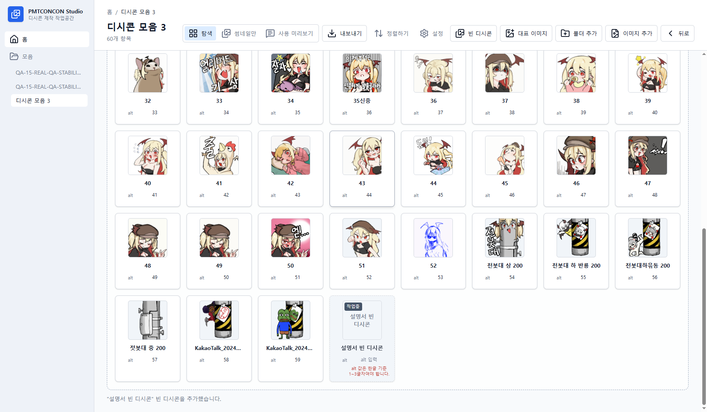
4. 단일콘 crop 편집
아이콘을 더블클릭하면 오른쪽에 아이콘 편집 패널이 열립니다. 단일콘은 한 개의 출력 파일을 만들며, 셀 크기와 crop 박스 크기를 조정해 원본의 일부만 선택할 수 있습니다.
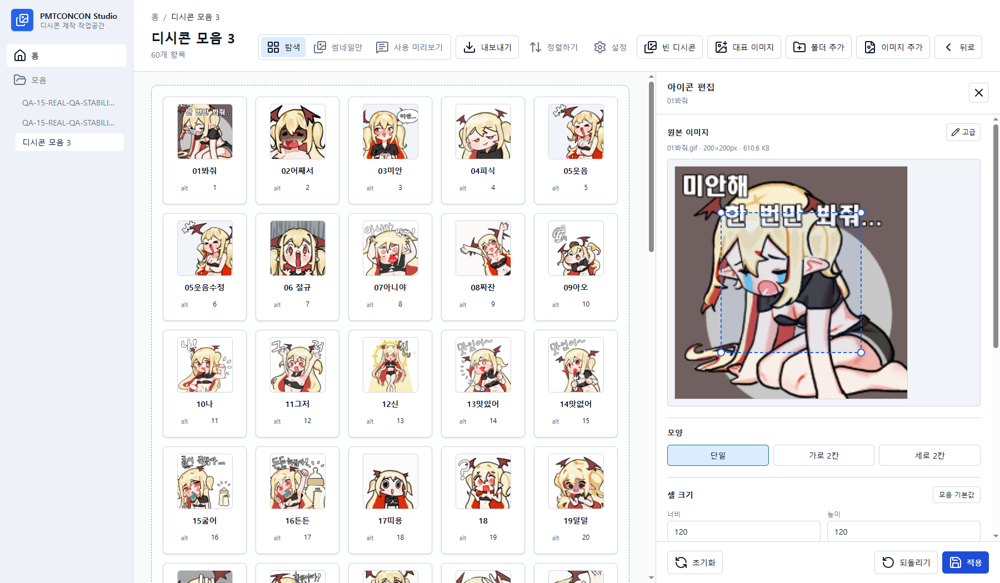
crop 박스의 위치와 크기를 직접 조절합니다. 모양이 단일이면 1:1 비율, 가로 2칸이면 2:1 비율, 세로 2칸이면 1:2 비율을 유지합니다.
선택한 셀 크기에 맞춰 crop 박스 크기를 고정하고, 위치만 움직입니다. 정렬 버튼으로 모서리와 중앙에 빠르게 배치할 수 있습니다.
- 아이콘을 더블클릭해 편집 패널을 엽니다.
- 모양에서 단일을 선택합니다.
- 셀 크기 입력칸에서 너비와 높이를 조정합니다. 기본값은 DCInside 기준 200×200입니다.
- crop 박스를 움직이거나 크기 조절 핸들을 드래그합니다.
- 적용을 누르면 preview와 export 후보가 갱신됩니다.
5. 가로 2칸 디시콘
가로 2칸은 하나의 아이콘이 좌우 두 조각으로 나뉘는 형태입니다. crop viewport는 셀 너비의 2배와 셀 높이로 잡히며, 내보내기에서는 왼쪽 조각과 오른쪽 조각이 별도 파일로 생성됩니다.
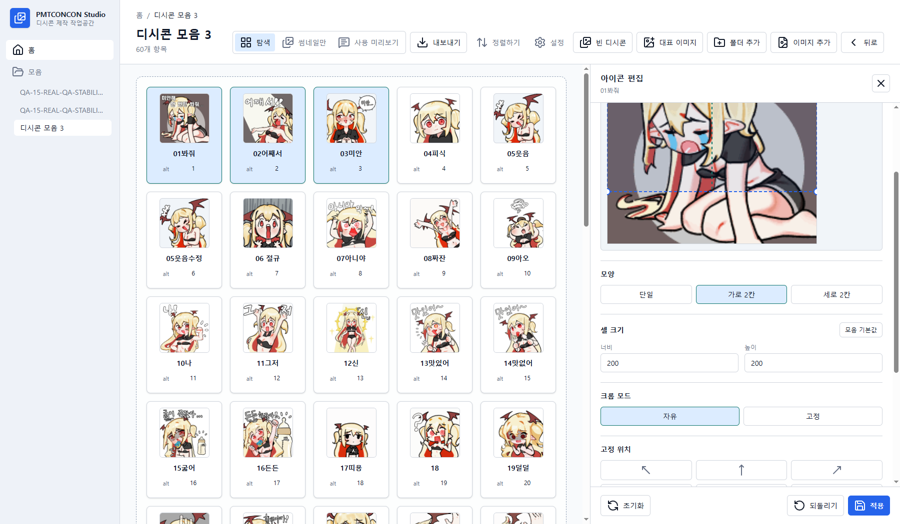
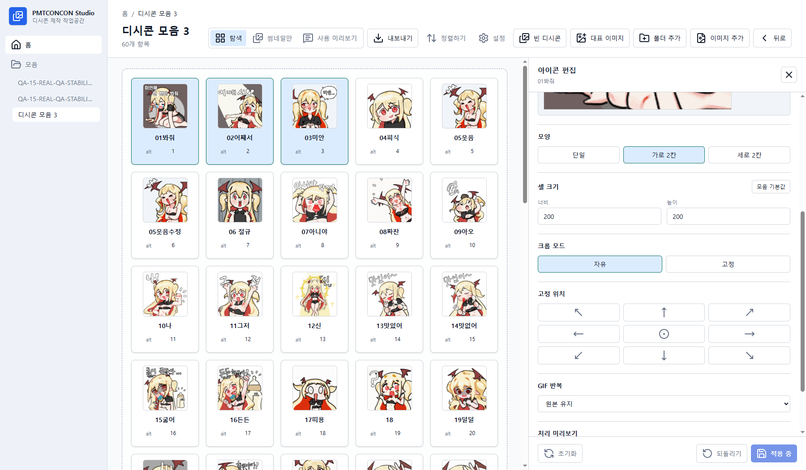
6. GIF와 텍스트 고급 편집
고급 편집에서는 GIF 재생 FPS, 색상 수, 실제 export 후보 생성, 텍스트 추가, 글자색과 외곽선, 폰트 파일을 다룹니다. GIF는 preview와 export에서 애니메이션을 유지해야 하므로, 반복 방식과 frame 처리 결과를 확인하는 것이 중요합니다.
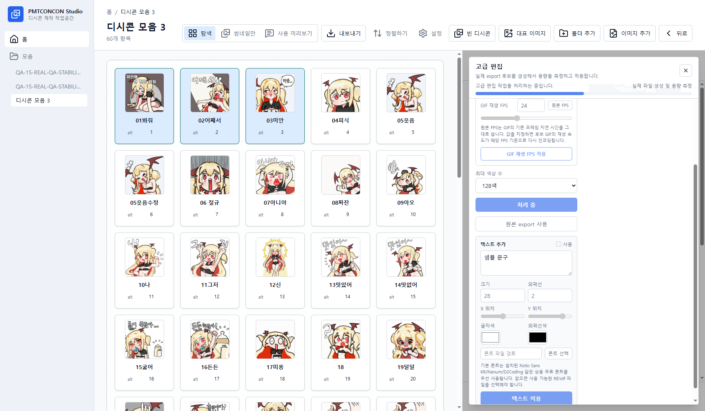
원본 frame 간격을 유지하거나 지정 FPS 기준으로 다시 인코딩할 수 있습니다.
GIF 용량을 줄여야 할 때 색상 수를 낮춰 export 후보를 다시 만듭니다.
문구, 크기, 위치, 글자색, 외곽선색, 외곽선 두께를 조정해 이미지 위에 자막을 얹습니다.
7. 사용 미리보기
사용 미리보기는 실제 DCInside 댓글 화면에 가까운 형태로 아이콘을 호출해 보는 공간입니다. 가로 2칸 아이콘은 팔레트에서 한 항목으로 보이지만, 왼쪽과 오른쪽 piece를 따로 삽입할 수 있습니다.
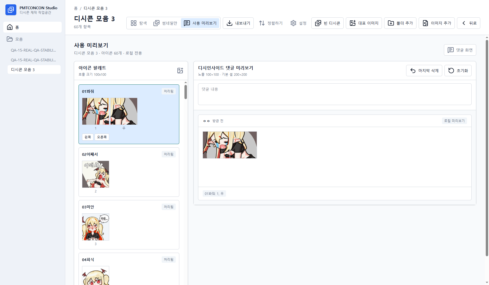
- 상단의 사용 미리보기를 누릅니다.
- 왼쪽 아이콘 팔레트에서 원하는 아이콘을 찾습니다.
- 단일콘은 아이콘을 클릭하고, 가로 2칸은 왼쪽 또는 오른쪽 piece 버튼을 선택합니다.
- 오른쪽 댓글 미리보기에서 크기, 순서, alt 표시를 확인합니다.
8. 내보내기 작업공간
내보내기 작업공간은 현재 모음과 export 결과를 나란히 보여줍니다. DCInside profile 기준으로 출력 수, 파일 형식, 셀 크기, 용량 제한, alt 중복, alt 길이와 허용 문자를 검사합니다.
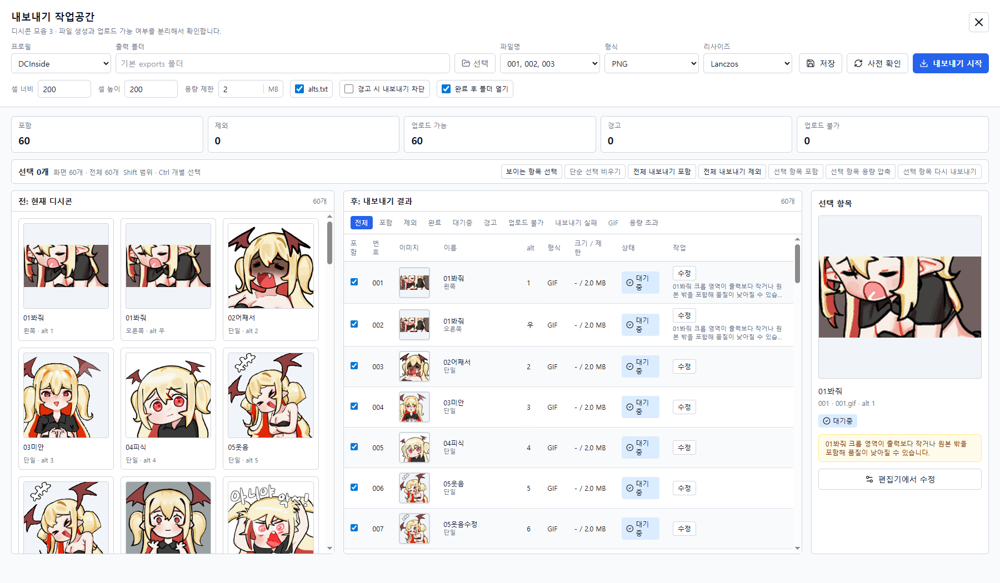
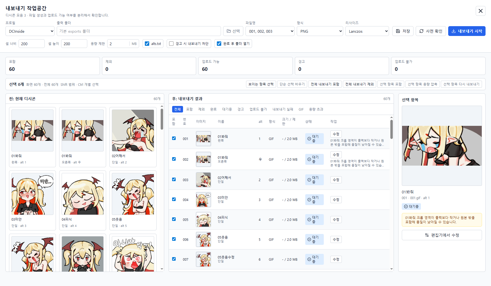
| 검증 항목 | DCInside 기본 기준 | 작업공간에서 보는 위치 |
|---|---|---|
| 출력 개수 | 10개 이상 200개 이하 | 상단 요약의 포함, 제외, 업로드 가능, 경고, 업로드 불가 |
| 셀 크기 | 기본 200×200 | 상단 `셀 너비`, `셀 높이` 입력칸과 결과 표의 크기 제한 열 |
| 형식 | jpg, png, gif | 상단 형식 선택과 결과 표의 형식 열 |
| 용량 | 파일당 최대 2MB | 용량 제한 입력칸, 결과 표의 크기/제한 열, 선택 항목 경고 |
| alt | 중복 없음, 한글 1~3글자, 허용 특수문자 * ^ ! ~ + |
격자 카드, alt 일괄 변경 대화상자, 결과 표의 alt 열 |
GitHub Pages로 공개하기
이 파일은 정적 HTML이므로 공개 저장소의 docs/index.html로 포함하면 GitHub Pages에서 바로 배포할 수 있습니다.
저장소 설정에서 Pages source를 배포할 브랜치의 /docs 폴더로 지정하면 됩니다.
- 이 저장소에
docs/index.html과docs/manual-assets/이미지를 커밋합니다. - GitHub 저장소의 Settings → Pages로 이동합니다.
- Source를 Deploy from a branch로 두고, branch는 공개할 브랜치, folder는 /docs를 선택합니다.
- 저장 후 생성되는 URL에서 설명서를 확인합니다. 보통
https://계정명.github.io/저장소명/형태입니다.
manual-assets/manual-*.png를 사용합니다.
GitHub Pages에서 HTML과 이미지 폴더가 함께 배포되면 별도 설정 없이 표시됩니다.
마무리 점검표
- 모든 screenshot 본문 이미지는 `디시콘 모음 3` 화면에서 새로 촬영한 `manual-*` 파일입니다.
- 단일콘 crop 설명에는 crop 박스가 원본 전체를 차지하지 않는 화면을 사용했습니다.
- 가로 2칸은 편집 화면, 적용 화면, 사용 미리보기, 내보내기 결과에서 모두 확인할 수 있습니다.
- 빈 디시콘과 작업중 상태는 별도 섹션에서 실제 추가 화면으로 설명했습니다.
- 내보내기 섹션은 설정, 검증 요약, 결과 표, 선택 항목 패널을 함께 설명합니다.